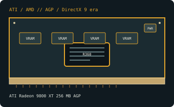

[ AGP-ERA GRAPHICS CARDS // IDENTIFIED COMPONENT ]
ATI Radeon 9800 XT 256 MB AGP
R360, 2003. This record identifies the listed retail model/configuration; board-partner variations are called out separately.

MODEL / VARIANT: 256 MB Radeon 9800 XT (R360), separate from Radeon 9800 PRO (R350), 9800 SE and 128 MB/256 MB partner revisions.
Recorded specifications
| Cataloged product | ATI Radeon 9800 XT 256 MB AGP |
|---|---|
| GPU / architecture / launch | R360; 2003. |
| Core & memory | R360 GPU; eight pixel pipelines and four vertex units; 256 MB DDR on a 256-bit interface; reference clocks of 412 MHz core and 365 MHz memory (730 MT/s effective). |
| Host interface & power | AGP 8x/4x; typical reference outputs are VGA, DVI-I and S-Video. Reference boards use a 4-pin peripheral (Molex) auxiliary-power connector. ATI did not publish a board-power rating for this model; inspect the actual board and provide suitable PSU capacity and cooling. |
| Typical reference outputs | Reference-class analog VGA, DVI-I and TV-out; adapter behavior depends on the exact DVI-I implementation. |
| Board dimensions | ATI Radeon 9800 XT reference-board length is approximately 230 mm; OEM and partner board layouts vary. Verify the exact board drawing and bracket clearance before installation. |
| Variant boundary | 256 MB Radeon 9800 XT (R360), separate from Radeon 9800 PRO (R350), 9800 SE and 128 MB/256 MB partner revisions. |
Compatibility, service & archival notes
Requires an AGP host; inspect motherboard AGP signaling/keying and the board label before installation. Verify the auxiliary 4-pin connector and PSU condition. Legacy operating systems may require period-correct ATI driver packages; match driver/device ID and preserve firmware before changes. Output capabilities are board-specific.
- Check the exact slot keying/signaling, board dimensions, auxiliary-power pinout, PSU guidance, airflow and display outputs for the specimen; connector appearance alone does not establish compatibility.
- Install a driver supporting the recorded device ID and target OS. Preserve the original driver and firmware versions before making changes.
- Record board partner, PCB and cooler revision, device/subsystem IDs, BIOS, adapter set and physical condition. Do not power a card with damage, corrosion, obstructed cooling or suspected shorts.
Manufacturer, model & standards sources
- ATI Radeon 9800 XT 256 MB AGP specifications — TechPowerUp GPU DatabaseIndependent model-level GPU, memory and interface reference; board revisions may vary.
- AMD legacy graphics drivers and support archiveManufacturer driver-support reference; select the product family, device ID and operating system that match the card.
- Accelerated Graphics Port (AGP) compatibility referenceAGP signaling and compatibility reference; confirm slot voltage and motherboard support.
- AMD product support and driver selectionAMD manufacturer support reference for identifying a compatible driver branch and operating system; availability depends on product age.
- DanielC — Retro Gaming on Radeon 9800 XTIndependent video review; treat as supplementary context, not primary manufacturer documentation.
GPU-family references do not supersede the card manufacturer’s manual, nameplate or board revision for a specific specimen.